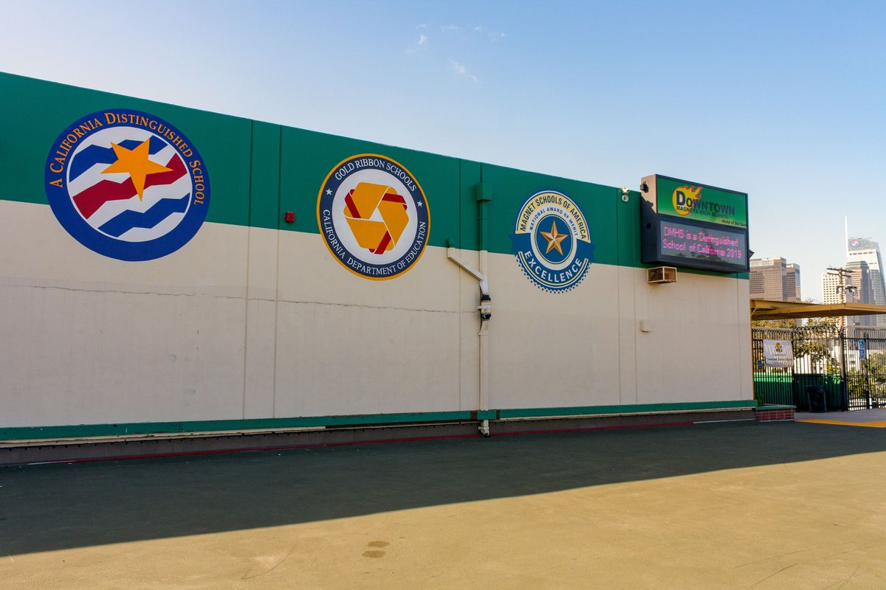
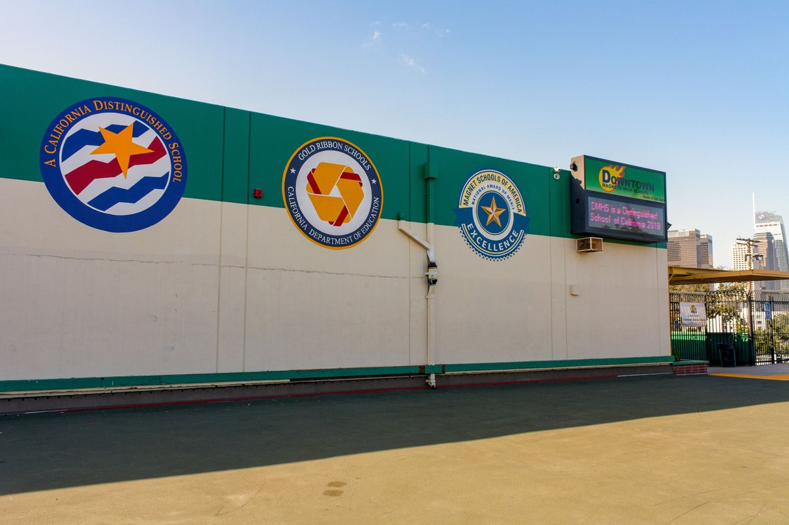

Nathan Gagar
Hello, My name is Nathan Gagar and I am in the graduating class of 2025 at UCR. I am a Pre-Business student who is deeply interested in finding the ideal career pathway for my life, as well as exploring new hobbies and interests to enrich my own life. I have minimal work experience in the food industry, as I have worked at Chipotle as a Crew member for about three months. While I may have only worked for a few months, I feel as though I gained a lot of hands-on knowledge regarding how the industry works as well as creating appropriate relationships with my coworkers. The most valuable thing that I learned during my time there was how important each member of a team in a work environment is, and that each individual must perform their best in order to increase work productivity. I had also learned that a strong manager also must be an excellent leader in order to further increase the output a workplace can do. These are important lessons that I feel I will need to use for the rest of my life, primarily in any job or industry that I will find myself in. I am grateful for the experience, and I am looking forward to more internships or jobs that I may take on in the future.
My other experiences outside of working include extracurricular activities in and out of school. During my high school experience, I had been a part of the Music Club cabinet as treasurer for three years of the four years I joined. This role has not only allowed me to work with others, but also taught me the importance of handling money appropriately as I had utilized a form of book keeping as well as manage all club expenses and revenues from fundraisers.
Outside of my school life, I had also worked at an award winning Hula studio as a mentor and a counselor for younger children who were interested in this type of dance during the summers of 2017-2019. My tasks included keeping track of each child in my designated group and helping them learn about both Hawaiian culture and dance. I felt as though this job was developmental for my own skills, as it taught me to some extent the difficulty of managing others as well as furthered my own interest in a culture that was different from my own.
Through my own experiences, I have learned some of the lessons that I will need to carry on through life as well as develop a better knowledge about the topics I am interested in. I acknowledge that I am still young and have much more to learn, especially since I am now considering which career pathways I would like to take on in life. I know that through what knowledge that I have gained that I am interested in the field of business. Although I have decided this much, there are still many routes for me to take, and I am eager to learn about each of these and put myself in a position where I can sustain myself as well as make a change in society.
Experience
Mentor and Instructor
• Managed children in maintaining a peaceful environment to promote the learning of Hawai'ian culture and dance.
Education
UC Riverside
Portfolio



